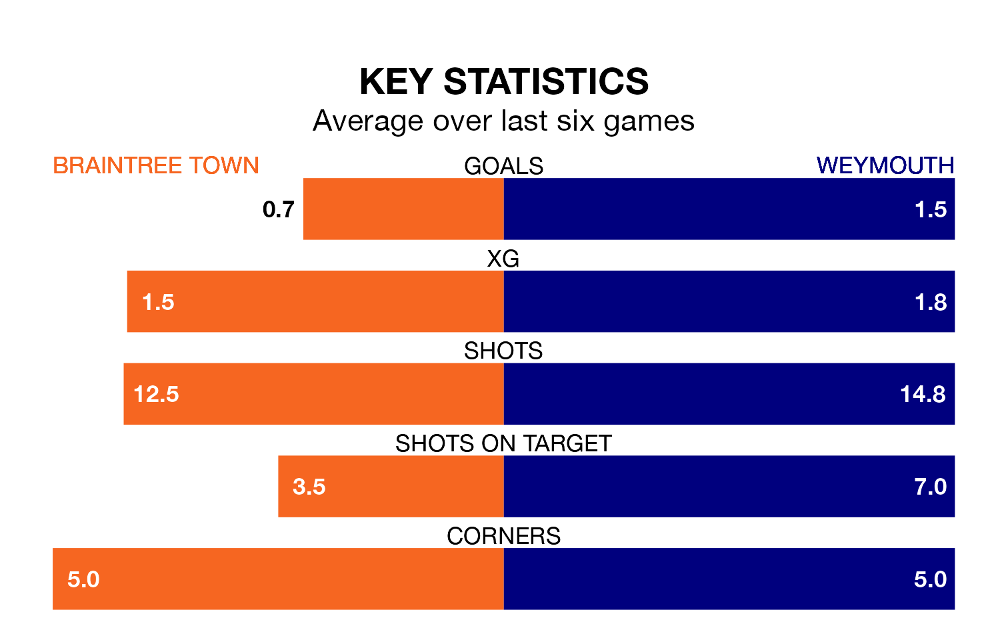

Weymouth travel to Braintree Town on late Tuesday in National League South.
The visitors come into the game on the back of a win in their last match, having beaten Weston-super-Mare 3-2 away.
The Iron, meanwhile, lost their last match, 3-0 against Chelmsford City.
In the last 10 years, Braintree and Weymouth have played each other on six occasions. Braintree won one of them, Weymouth two, and they drew three times.
On average, the Iron scored 1.0 goal and Weymouth 1.3 in those matches.
Their last meeting was on March 11, when they played out a 0-0 draw.
Weymouth are 19th in the table after 27 games, of which they have won seven and drawn 11, earning 32 points.
Braintree are seven places ahead of the away team in 12th, with 10 wins and seven draws putting them on 37 points.
With 35 goals in 27 games so far this season, Weymouth are scoring at below the league average rate with 1.3 goals per game. And they are conceding at an average rate, letting in 40 goals at a rate of 1.5 per game.
Town, meanwhile, are average scorers, with 1.5 goals per game. They have conceded 1.2 goals per game.
The Iron are in mixed form in National League South, with two wins and a draw from their last six games.
With two wins and three draws over that period, Weymouth's form is slightly better – they have taken nine points from 18, compared to the hosts' seven.
Updated: 14:53 (UTC), 16/01/24